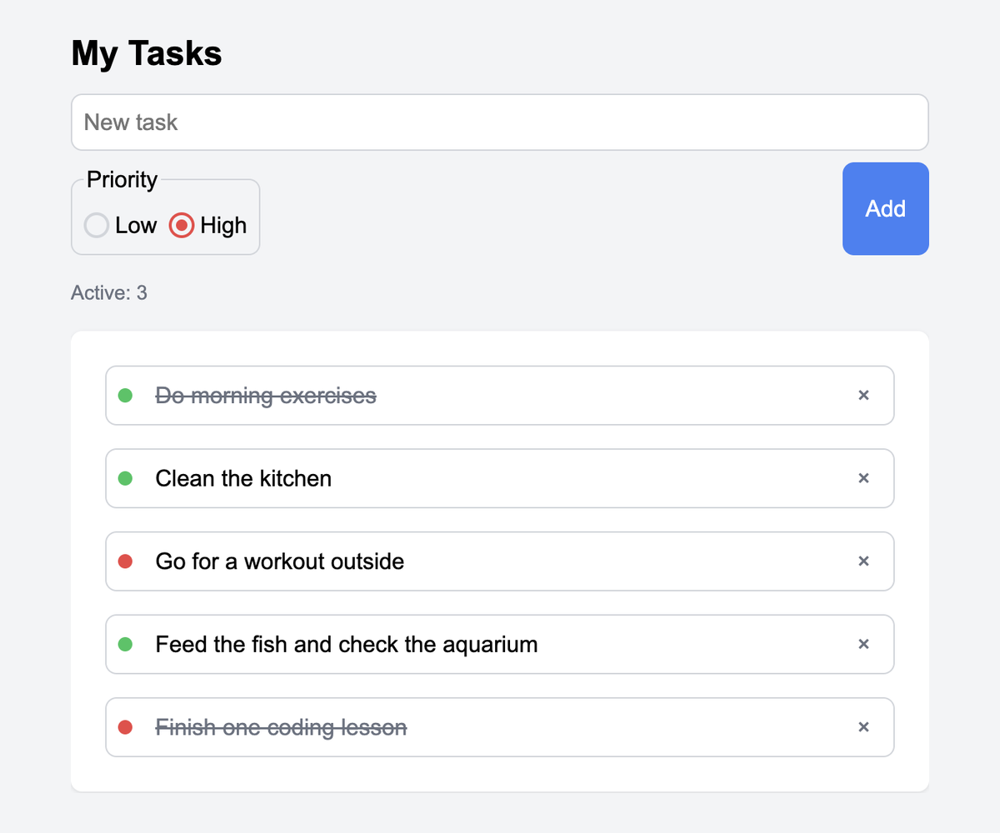

To Do List
A task manager with priority levels that keeps your list between sessions.

About the project
Add a task, set its priority, mark it done or delete it. The active task counter updates as you go, and everything is stored in the browser, so the list survives a page reload.
Built with vanilla JavaScript, no frameworks or libraries.
Challenges
-
One handler for two different actions
Clicking a task toggles it, clicking the delete button removes it — but both clicks land on the same list. Instead of attaching a listener to every task, one listener sits on the list and checks what was actually clicked: the delete button carries a
data-actionattribute, everything else falls through to the toggle. Tasks added later work without rebinding anything. -
An empty state that broke the app
When the list is empty, a placeholder message appears. I gave it the same class as a task item so it would inherit the styling — and the click handler started treating it as a task. Clicking the placeholder crashed the app:
closestfound it, but there was no matching item in the array. A class is not only styling, it's also how the code identifies elements. -
Surviving a page reload
Local storage only holds strings, so the task array is serialised to JSON on every change and parsed back when the app starts. On a first visit there is nothing stored yet, which means the parse returns
null— the app falls back to an empty array instead of trying to render it.
Built with
- JavaScript (ES modules)
- Web Storage API (localStorage)
- SCSS
- BEM
- Vite
- GitHub Actions